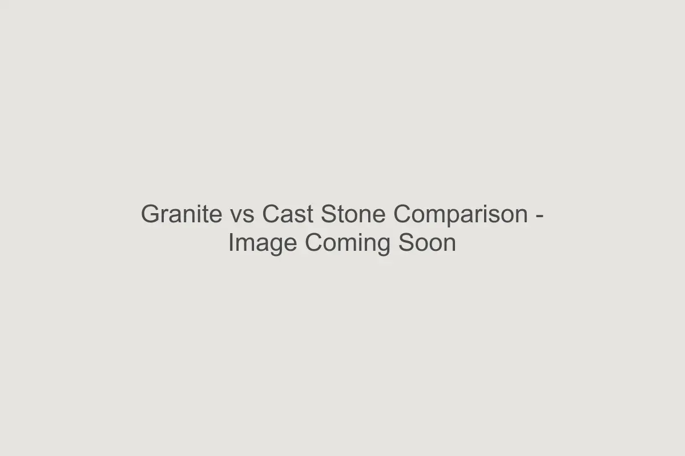

The Difference at a Glance
The two most common materials for high-quality pet memorials are natural granite and cast stone (concrete). While both are durable, they age differently and offer distinct aesthetic qualities.
Natural Granite: The Forever Stone
Granite is an igneous rock formed by volcanic activity. It is incredibly dense, hard, and nearly impervious to water absorption.
- Durability: Exceptional. Granite resists cracking from freeze-thaw cycles better than almost any other material.
- Appearance: Offers a polished or honed face with sharp contrast when engraved. The "black" granite often used for laser etching allows for photo-realistic detail.
- Maintenance: Virtually zero. Rain naturally cleans it, and it does not typically grow moss or algae easily due to its non-porous surface.
Cast Stone: The Classic Aesthetic
Cast stone is a refined concrete product, molded to look like natural stone. It has a warmer, more rustic texture that many find appealing for garden settings.
- Durability: Very high, but slightly more porous than granite. Over decades, it may develop a patina or weather more noticeably.
- Appearance: Matte finish with a uniform or slightly speckled texture. Engraving is deep and bold but lacks the high-contrast "pop" of polished granite.
- Maintenance: May require occasional scrubbing if placed in damp, shady areas to prevent moss growth.
Which Should You Choose?
Choose Granite If:
- You want the absolute highest durability rating.
- You prefer a sleek, timeless look with high-contrast text.
- You live in an area with extreme weather fluctuations.
Choose Cast Stone If:
- You prefer a softer, more natural "garden" look.
- You appreciate the way stone weathers and blends into the landscape over time.
- You are looking for a slightly more affordable option without sacrificing quality.
A Note on Engraving Quality
Regardless of material, the depth of engraving is critical. At Melton Memorials, we ensure deep, sandblasted engraving on all our custom stones. This ensures that even if moss grows or the stone weathers, the name of your companion remains legible for generations.
Once you've decided on the material, the next step is choosing the right size for your wording and placement.
FAQ
Will granite fade in the sun?
Natural granite does not fade. However, if a stone has been artificially dyed (which we do
not use), it might. Our granite is naturally colored.
Can cast stone crack in winter?
Quality cast stone is cured to resist cracking, but it is slightly more susceptible than
granite if moisture gets trapped inside during a deep freeze.